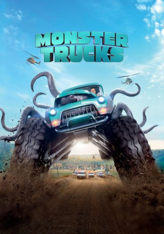

#5848 Monster Trucks
 gesehen am 28.04.2017
gesehen am 28.04.2017
 
 IMDB-Wertung: 5.5 / 10
IMDB-Wertung: 5.5 / 10  Metascore: 0
Metascore: 0 
Tripp (Lucas Till) ist bald fertig mit der High School und denkt nur an eines: Möglichst schnell raus aus seinem Kaff! Er verbringt seine Freizeit damit, aus alten Autoteilen einen Truck zusammen zu bauen. Als in der Nähe seiner Werkstatt eine Ölexplosion stattfindet, kommt ein seltsames Wesen frei. Tripp nähert sich dem krakenartigen Unterwelt-Tier an und merkt, dass das Riesenmonster fast schreckhafter ist, als er. Das Wesen hat die skurrile Tendenz, sich in Autos zu verschanzen und steht vor allem darauf, mit ihnen Gas zu geben. Tripp findet einen Weg, die schrullige Eigenart seines neuen Monster-Freundes für sich auszunutzen: Das Monster wird zum Motor für seinen getunten Mutanten-Truck! Zusammen mit der süßen Meredith (Jane Levy) will Tripp mit seinem Monster-Truck auf und davon, doch bevor sie ihren Träumen nachjagen können, müssen sie ihren besonderen Monster-Freund erstmal gegen die bösartigen Übergriffe verteidigen.
Jahr: 2016
Dauer: 104 Minuten
FSK: 6
Land: USA Studio: Paramount PicturesTonspuren: DD5.1 - ,
Untertitel: Deutsch,
Auflösung: 1080p (1920x800) Größe: 4188 MB
Genre: Action, Sci-Fi, Komödie, Abenteuer, Fantasy, Animation/Trick, Familie
Regisseur: Chris Wedge
Drehbuch: Stéphane Keller
Soundtrack:
Darsteller:
 Lucas Till als Tripp
Lucas Till als Tripp Jane Levy als Meredith
Jane Levy als Meredith Thomas Lennon als Jim Dowd
Thomas Lennon als Jim Dowd Barry Pepper als Sheriff Rick
Barry Pepper als Sheriff Rick Rob Lowe als Reece Tenneson
Rob Lowe als Reece Tenneson Danny Glover als Mr. Weathers
Danny Glover als Mr. Weathers Amy Ryan als Cindy
Amy Ryan als Cindy Holt McCallany als Burke
Holt McCallany als Burke Frank Whaley als Wade Coley
Frank Whaley als Wade Coley- Aliyah O'Brien als Junior Scientist
 Daniel Bacon als Technician
Daniel Bacon als Technician- Faustino Di Bauda als Roughneck
 Jedidiah Goodacre als Jake, Letterman Kid
Jedidiah Goodacre als Jake, Letterman Kid Samara Weaving als Brianne
Samara Weaving als Brianne Stacey Scowley als TV Reporter
Stacey Scowley als TV Reporter- Tucker Albrizzi als Sam Geldon
 Chris Gauthier als Mr. Geldon
Chris Gauthier als Mr. Geldon Scott Patey als Deputy
Scott Patey als Deputy- Ryan Cowie als Other Deputy
- Adrian Formosa als Security Merc
- Maja Aro als Pretty Woman in Car
- Philip Granger als Used Car Lot Owner
- Daniel Boileau als Car Lot Associate
 Peter New als Taxi Cab Driver
Peter New als Taxi Cab Driver Simon Chin als Security Guard
Simon Chin als Security Guard- Devielle Johnson als Terravex Security Guard
 Christian Sloan als Driver
Christian Sloan als Driver- Jordana Largy als Tenneson's Secretary
- Ian Carter als Oil Exec
- Howie Lai als Engineer
- Jagen Johnson als Terravex Worker
 Giacomo Baessato als Special Agent
Giacomo Baessato als Special Agent- Emanuel Fappas als Truck Driver , uncredited
- Jeff Kent als Oil Worker , uncredited
- Jeffrey C.R. Wallace als Officer , uncredited
- Ruairi MacDonald als 9th Grader
- Alex Kliner als Grandpa
- Pat Waldron als Grandma
- Ryver Stone als Little Boy in Restaurant
- Candice Zhao als Executive
- Matthew Hoglie als Restaurant Patron , uncredited
- Tom MacNeill als Oil worker , uncredited
- Joel Sturrock als Creature, For Performance , uncredited
Datei: X:\2016(G-M)\Monster Trucks (2016, FSK6, 1920x800).mkv seit 29.03.2017
Festplatte: HD 2016(A-Z)
 Es gibt insgesamt 164 Filme in der Gruppe '2016(G-M)'
Es gibt insgesamt 164 Filme in der Gruppe '2016(G-M)'